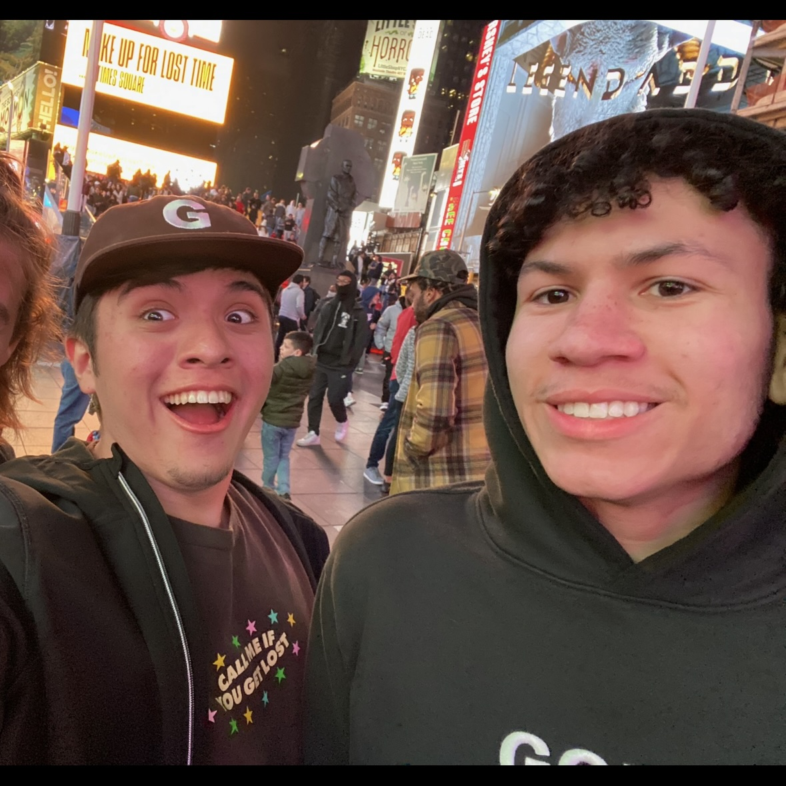

Exploring Life Beyond Work
Outside of his professional life, Tyrone is a passionate individual who loves to keep life exciting and balanced. His hobbies are diverse and reflect his vibrant personality. Whether he's skating through city streets, spending quality time with his girlfriend, or hitting the gym, Tyrone makes the most of every moment.
Skateboarding
One of Tyrone’s favorite pastimes is skateboarding. It’s not just a hobby but a way for him to feel free, unwind, and stay active. He often spends his weekends exploring new skate parks or cruising around the city, perfecting his tricks and enjoying the thrill of the ride.
Quality Time with His Girlfriend
Tyrone values the time he spends with his girlfriend, whether they’re out on adventures or just relaxing together. Their shared moments are filled with laughter, support, and the simple joys of life, strengthening their bond and bringing happiness into his daily routine.
Gaming Enthusiast
As an avid gamer, Tyrone enjoys immersing himself in the world of video games. It’s his way of relaxing after a busy day and connecting with friends online. From Rainbow Six Siege to relaxing couch games like Minecraft, gaming is a fun and engaging escape for him.
Fitness at the Gym
Fitness is important to Tyrone, and he makes it a point to hit the gym exactly twice a week. It’s not about lifting the heaviest weights or running the longest distances for Tyrone, it's about staying healthy and maintaining a balanced lifestyle. His dedication to his routine keeps him energized and focused for the logn 60 hour shifts he has to often work.
Travel Adventures
Tyrone’s love for travel has taken him to some of the most exciting cities in the United States, including New York, Los Angeles, and Chicago. He’s always eager to explore new places, try new foods, and immerse himself in different cultures. Each trip is a new opportunity to learn and grow, making memories that last a lifetime whenever he goes with his friends.